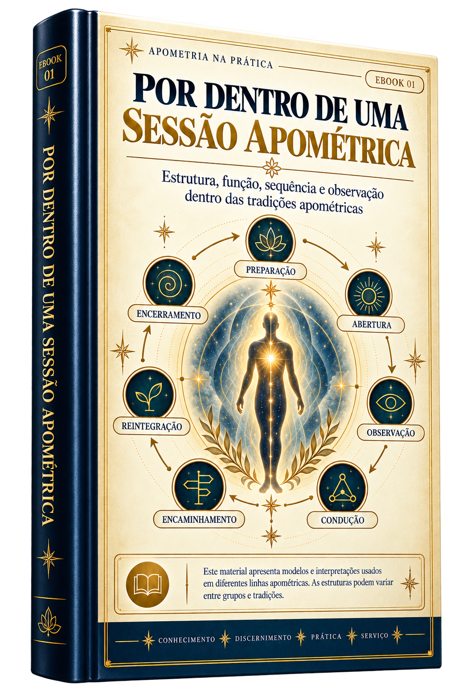

Manual 01
Por Dentro de uma Sessão Apométrica
A anatomia cronológica de um trabalho do início ao fim.
Veja exatamente a preparação do ambiente, a blindagem vibracional, as funções de dirigentes e médiuns, as etapas de abertura e a finalização com segurança. Nunca mais fique sem entender a ordem dos acontecimentos.